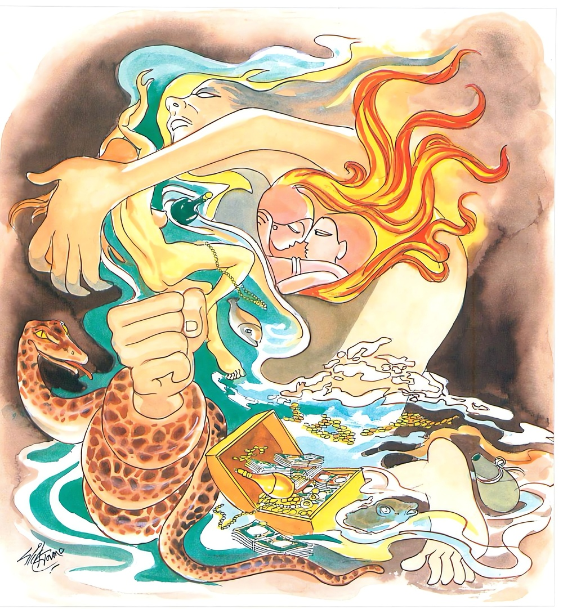

18-9 පඤ්ච උපාසක වරුන් පිළිබඳ කථා පුවත
මෙම කතාව සද්ධර්ම සාගරයෙන් ද කියවන්න.
නත්ථි රාගසමො අග්ගි නත්ථි දොසසමො ගහො
නත්ථි මොහසමං ජාලං නත්ථි තණ්හාසමා නදී.
රාගය හා සම ගින්නෙක් නැත. ද්වේෂය හා සම ඩැහැගැන්මෙක් නැත. මෝහය හා සම දැලෙක් නැත. තෘෂ්ණාව හා සම නදියෙක් නැත.

"නස්ථිරාගසමොති” යන මේ ධර්ම දේශනය ශාස්තෲන් වහන්සේ දෙව්රම වැඩ සිටියදී උපාසකවරු පස් දෙනෙක් පිළිබඳව දේශනා කළහ.
ඒ උපාසකවරු ධර්මය අසනු කැමතිව විහාරයට ගොස් බුදුන් වැඳ එකත් පසෙක වාඩිවුහ. බුදුවරුනම් මේ ක්ෂත්රියෙකි. මේ බ්රාහ්මණයෙකි. මේ ධනපතියෙකි. මේ දුගියෙකි. මොහුට උසස් කොට ධර්ම දේශනා කරන්නෙමි. මොහුට එසේ නොවේ. යනුවෙන් නොසිතති. යම් කිසිවෙක් අරමුණු කරගෙන ධර්මය දේශනා කරන්නේ ධර්මයෙහි ගෞරවය පෙරටුකොට අහස් ගගින් කඩාහැලෙන ලෙස දේශනා කරන්නාහ.
මෙලෙස දේශනා කරන විට බුදුන් සමීපයේ සිටිය වුන්ගෙන් එක් අයකුට වාඩිවී සිටියදී ම නින්ද ගියේය. එක් අයෙක් ඇඟිල්ලෙන් බිම සාරමින් සිටියේය. එකෙක් ගසක් සොලවමින් සිටියේය. එක් අයෙක් අහස බලමින් සිටියේය. එක් අයෙක් හොඳින් බණ අසමින් සිටියේය. ආනන්ද තෙරුණුවෝ බුදුන්ට පවත්සලමින් සිට ඔවුන්ගේ ස්වරූපය දැක, බුදුන්ට මෙසේ පැවසුහ. ස්වාමීනි ඔබවහන්සේ මහාමේඝ ගර්ජනාවක් කරන්නාසේ ධර්මය දේශනා කරති. මොවුන් ඔබවහන්සේ ධර්මදේශනා කරද්දීත් එකිනෙක දේ කරමින් සිටිති. ආනන්ද ඔබ මොවුන් දන්නේද? ස්වාමීනි මම නොදනිමි. මොවුන් අතරින් මේ නිදන තැනැත්තා පන්සියක් ජාති සර්පයෙක්වී සිට දරණ වැලේ හිස තබාගෙන නිදා ගත්තෙකි. දැනුදු ඔහු නිදාගෙන සිටී. ස්වාමීනි ඔබවහන්සේ පිළිවෙලින් සිදුවුනේ කියන්ද නැතහොත් අතරින් පතර සිදුවූ දෙයක් පවසන්නේද? ආනන්ද මොවුන් කාලයක් මනුෂ්ය ආත්ම ද කලක් දේවත්වයද කලක් නාග ආත්මද මෙසේ අතරින් පතර උපදිනවිට ඒ උපන් සර්වඥතා ඥාණයෙන්ම පිරිසිඳ දැනගැනීමට හැකිය. පිළිවෙලින් ජාති පන් සියයක් නාග යෝනියේ ඉපිද නිදාගන්නේ නින්දේ ඇතිවීමක් නම් නැත. ඇඟිල්ලෙන් බිම සාරන තැනැත්තා ජාති පන් සියයක් ගැඩවිලෙක්වී බිම සෑරිය. මෙහි බිමසාරමින් මගේ ශබ්දය නො අසයි. මේ ගස සොලවන තැනැත්තා පිළිවෙලින් ජාති පන්සියයක් වඳුරු යෝනියේ උපනි. දැනුදු පෙර පුරුදු ලෙසට ගසක් සොලවයි. මොහුගේ කණට මාගේ ශබ්දය නො පිවිසේ. මේ අහස දෙස බලා සිටින පුරුෂයා පන්සියයක් ජාති නැකැත් පාඨකයෙක්ව, උපනි. දැන් පෙර පුරුදු ලෙසට අදත් අහසම බලා සිටියි. ඔහුගේ කණටද මගේ ශබ්දය නො පිවිසේ. මේ සකසා ධර්මය අසන්නා නම් පිළිවෙලින් පන්සියයක් ජාති ත්රිවේදය පාරප්රාප්තව මන්ත්ර කියන බමුණෙක්ව උපන්නේය. දැන් ද මන්ත්ර සසඳන සේ හොඳින් සවන් දෙයි.
ස්වාමීනි ඔබ වහන්සේගේ ධර්ම දේශනා සිවි ආදිය සිඳ ඇටමිදුළුවල හැපී සිටියි. කුමක් හෙයින් මොවුන් ඔබවහන්සේ ධර්මදේශනා කරනවිටත් සකසා නොඅසන්නේද? ආනන්ද මගේ ධර්මය මනාසේ ඇසිය යුතුයයි සංඥා කෙරේද? ඇයි ස්වාමීනි ඇසීමට අපහසුද? එසේය ආනන්ද ඇයි ස්වාමීනි. ආනන්ද බුද්ධ - ධම්ම - සංඝ යන පද මේ සත්ත්වයන් විසින් අප්රමාණ කල්ප කෙළදහසක් නො ඇසු විය. යම් හෙයකින් මේ ධර්මය ඇසීමට නොහැකිවන්නේ කෙළවරක් නොමැති සසර මේ සත්ත්වයෝ නොයෙක් ආකාර තිරච්ඡාන කථාම පමණක් අසමින් පැමිණියෝය. එනිසා සුරාසැල් කෙළිමඩල ආදීන්හි ගයමින් නටමින් හැසිරෙත්. ධර්මය ඇසීමට නොහැකිවෙති. ස්වාමීනි කවර කරුණක් නිසා මේ සත්ත්වයින්ට නොහැකිවේද? අනතුරුව බුදුහු ආනන්දය රාගය වේශය මෝහය නිසාය. තණ්හාව නිසා නොහැකි වේ. රාගය ගින්නක් වැන්න. ගිනි අඟුරු ද ඉතිරි නොකර සත්වයා දවාලයි. කෙසේ හෝ සප්ත සුර්යෝද්ගමනය පහළ වීම නිසා උසස් කල්ප විනාශයක ගින්න කිසිවෙක් ඉතිරි නොකරම ලොව දවාලයි. එය කවදා හෝ කෙසේ හෝ දවයි. රාග ගින්නෙන් නොදැවෙන කාලයක් නම් නැත. එනිසා රාගසමවු ගින්නක් හෝ ද්වේශය සමාන ග්රහනයක් මෝහය හා සමාන වු දැලක් තෘෂ්ණාව සමාන ගගක් නම් නැතැයි පවසා මේ ගාථාව පැවසුහ.
රාගය ගින්නයෙ මුළු දිවියම දවන
තරහව නරකමය නිති තැන තැන ඇලෙන
මෝහය දැලකි - ආසා ගගුලකි ගලන
දුරුකොට ලබනු මැන ඔබ විදු නැණ පහන
එහි දුම් අගුරු ආදී කිසිවක් නැතිව ඇතුළතින් දැවෙන්නා වූ රාගය හා සමාන ගින්නක් නැත. ආදී කිසිවක් ගැනීමට නොහැකිවන ද්වේශය හා සමාන ග්රහණයක් නැත. මොහසමං - නැවත නැවත දුක්ගෙන දෙන ගංගා ආදිය පිරුණ කළ ජලය අඩු කාලයේ ද වියළි කාලයේද දක්නට ලැබේ. නිතර අඩුවම දක්නට ලැබේ. දුප්පුරිය යන්නෙන් තෘෂ්ණාව සමාන ගඟක් නම් නැත. යන අර්ථයයි.
ධර්ම දේශනය අවසානයේදි ඒ සකසා ධර්මය ඇසු තැනැත්තා සෝවාන් ඵලයට පත්විය පැමිණි අයට ද දේශනය සාර්ථක විය.